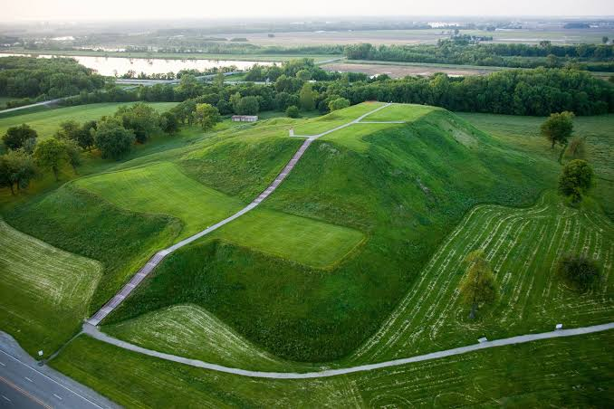

Cahokia
The Forgotten Native American City

Cahokia, located near present-day St. Louis, Missouri, was a massive
Native American city with over 120 mounds. It flourished between 1050
and 1350 AD but was mysteriously abandoned. Its remains are now a UNESCO
World Heritage Site.